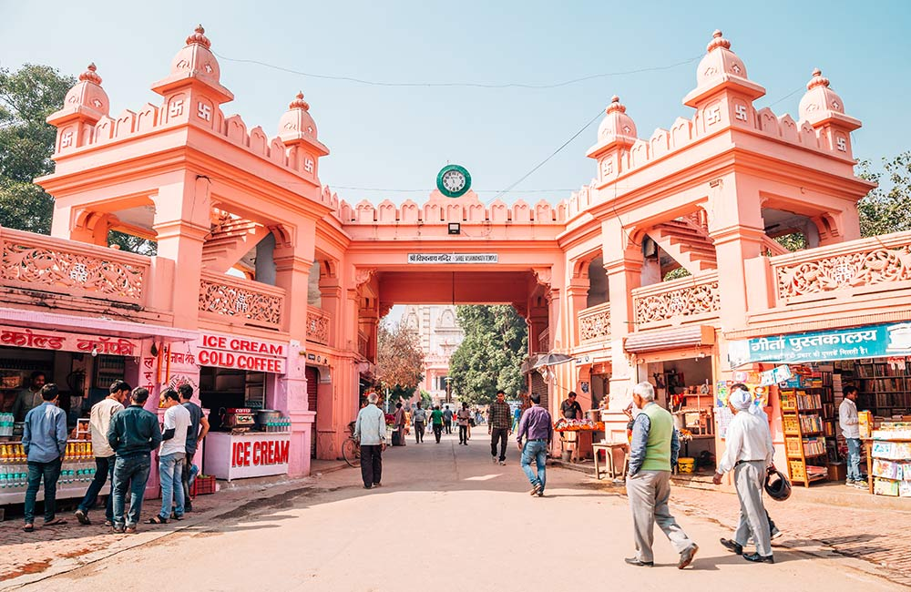
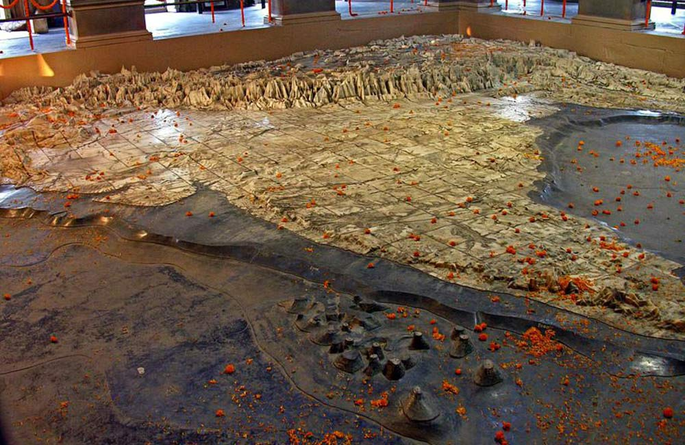
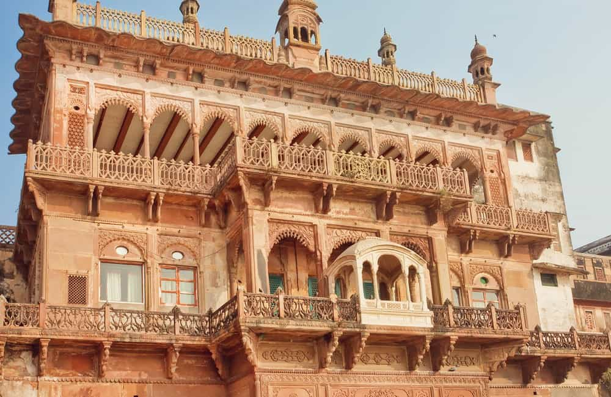

- Timings: 2:30 AM to 11:00 PM
- Temple Schedule:
- Mangal Aarti: 2:30 AM
- Bhog Aarti: 11:30 AM to 12:00 pm
- Sapta Rishi Aarti: 7:00 PM to 8:00 PM (darshan not allowed)
- Shringar/Bhog Aarti: 9:00 PM (only outside darshan allowed)
- Shayana Aarti: 10:30 PM
13 Best Places to Visit in Varanasi for a Glimpse into the Mystical Culture
1. New Vishwanath Temple, Varanasi

Located inside Banaras Hindu University, this temple has tourists flocking to its doors on a daily basis. The Birla family that has been a hugely successful group of entrepreneurs in India commissioned its construction, leading locals to call it Birla Temple. A great thing about the temple is that it isn’t just one building, but actually seven separate temples that together make one big religious complex. The legendary old Vishwanath temple is a direct inspiration for the design of this temple. Every wall of it is covered in the utterings of Lord Krishna, when he recited the Bhagwad Gita. One of the most iconic temples in Varanasi, it is a must visit on a trip!
2. Kashi Vishwanath Temple, Varanasi
Many people see it as the foremost temple to visit in Varanasi, and some consider it the most significant temple in the entire country. Its story is as old as over three thousand and five hundred years, which is an astounding amount of time. So much has happened in and around it that it is hard to not feel overwhelmed when visiting it. It is one of the 12 Jyotirlingas that are Shivalingas that are the physical symbols of Lord Shiva. The spires and domes of the shrine are completely covered in gold. The then ruler of Punjab, Maharaja Ranjit Singh was responsible for that, as covering temple domes in gold is a Punjabi tradition, as demonstrated in the Golden Temple. Many devotees believe that a single glimpse of the Shivalinga cleanses your soul and puts life on a path of knowledge.
- Timings: 2:30 AM to 11:00 PM
- Temple Schedule:
- Mangal Aarti: 2:30 AM
- Bhog Aarti: 11:30 AM to 12:00 pm
- Sapta Rishi Aarti: 7:00 PM to 8:00 PM (darshan not allowed)
- Shringar/Bhog Aarti: 9:00 PM (only outside darshan allowed)
- Shayana Aarti: 10:30 PM
3. Durga Temple, Varanasi

Dedicated to Goddess Durga, this temple is a symbol of feminine divinity. The deity present in this temple is believed to have materialised out of thin air and was not made by any man. Another badge of feminism for this temple is that it was actually commissioned by a woman. The Maharani of Bengal was responsible for its making and it was according to her wishes that it was constructed in the Nagara style of architecture. But, the most interesting fact about this temple is perhaps the fact that it is visited by several monkeys every day. In fact, there are so many monkeys here that it is often called ‘Monkey Temple’. So, beware of those mischievous apes when visiting here!
- Timings: 5:00 AM- 9:00 PM
- Location: Durga Mandir is situated on the Sankat Mochan road, adjacent to Durga Kund, 250 meters north of Tulsi Manas Mandir, 700 meters north-east of Sankat Mochan Mandir and 1.3 kilometers north of Banaras Hindu University.
4. Bharat Mata Temple, Varanasi

Being dedicated to the country itself, it is one of the rarest temples in the country. India is famous for its millions of temples and nationalist spirit, but there are very few places that commemorate the country itself. And since this is such a rare temple, it is visited by almost everyone who comes to Varanasi. Situated within the Mahatma Gandhi Kashi Vidyapith campus, it was inaugurated by Gandhi himself in 1936. It was supposed to be an inspiring beacon of love and hope for all that were fighting against the British. Instead of a statue of a deity that looks like a human, this temple’s statue is that of mountains, plains and oceans.
- Timings: 7:00 AM to 5:30 PM
- Location: Bharat Mata Mandir is situated on the campus of Mahatma Gandhi Kashi Vidyapith and is 1.5 kilometers south of Varanasi Junction railway station and six kilometers north of Benaras Hindu University.
5. Alamgir Mosque, Varanasi

On a list filled with temples, Alamgir mosque stands proudly as a representation of Muslims who have lived here for centuries. Famed for its incredible Islamic architecture, this mosque is unique in the fact that it is located at the banks of the Ganga. It is believed that the Mughal Sultan Aurangzeb who was the great-grandchild of Akbar, constructed it. Another name for emperor Aurangzeb was Alamgir, which is why this mosque is called as such. Historically, it has been noted that Aurangzeb was responsible for the demolishment of a temple to construct the mosque. But still, the mosque retained many Hindu influences as can be seen in its unique architecture and art. The mosque has high domes and minarets. Two of its minarets were damaged; one minaret collapsed killing a few people and the other was officially brought down owing to stability concerns. The Panchaganga Ghat where the mosque is situated is where five streams are said to join.
- Timings: 7:00 AM- 7:00 PM
- Location: The mosque is located at a prominent site above the Panchganga Ghat. The ghat has broad steps that go down to the Ganges.
6. Dashashwamedh Ghat, Varanasi

This particular ghat is believed to be the oldest one in the city, and is hence considered special. If you have seen video footages of people bathing in Ganga and praying with diyas in their hand on the banks of a river, odds are that it was this ghat you saw. It is often abuzz because of the hordes of people who flock to it to wash away their sins and pray. Ascetics, Hindu devotees and tourists alike all alight on the banks of the Ganga at Dashashwamedh Ghat on a daily basis. Being such an important landmark and host to the famous Ganga aarti, it is a must-visit on any trip to Varanasi. Ganga Aarti (ritual of offering prayer to the Ganges river) is held daily at dusk. Several priests perform this ritual by carrying deepam and moving it up and down in a rhythmic tune of bhajans. Special aartis are held on Tuesdays and on religious festivals. The Ganga Aarti starts soon after sunset and lasts for about 45 minutes. Hundreds of people gather at the ghat every evening to watch the event.
- Aarti Timings: 7:00 PM to 7:45 PM (summers); 6:00 PM to 6:45 PM (winters)
7. Manikarnika Ghat, Varanasi
It is one of the oldest ghats in Varanasi. The Manikarnika Ghat is mentioned in a Gupta inscription of 5th century. This ghat is again quite significant among Hindus as it is the main cremation ghat in the city. People who have died often get cremated here, in the belief that they attain moksha. There is a myth that says Devi Parvati’s ear ornament fell at the exact spot of this ghat when Lord Shiva came here with her. There is another myth about the ghat : the well at the ghat is called Manikarnika Kund and was built by Lord Vishnu. Although the atmosphere is rather grim here most days, it is still a very historical place to visit if you are in Varanasi. Also, referred to as the burning ghat, it is certainly an important part of Varanasi, just as death is to life!
- Timings: Open throughout the day
- Location: The Manikarnika Ghat is flanked by the Dashashwamedh Ghat and the Scindia Ghat.
8. Assi Ghat, Varanasi

Assi Ghat is believed to be the place where the legendary poet Tulsidas passed away. The southernmost ghat in the region, it is among the most popular with tourists. On an average day about 300 people visit it per hour, but during festival days that number can be as high as 2500 people. The ghat accommodates about 22,500 people at once during festivals like Shivratri. When here, you can go on a leisurely boat ride on the river or even a hot air balloon excursion! Devotees bathe here before conducting rituals as the water of the river is said to purity their soul, preparing them for the task.
- Timings: Open throughout the day
9. Manmandir Ghat, Varanasi
It was commissioned to by Raja Man Singh in the early 1600s. He had a large stone balcony built on the northern corner of the ghat so he could sit there and enjoy the serenity. Compared to other ghats, this ghat has a lower footfall which makes it an excellent place to spend a day at. Located just north of Dashashwamedh ghat, it is a great spot for observing the Ganga flow peacefully. Another great reason to visit this ghat is its closeness to several prominent temples, so you can cover numerous places in one go. Some of the closest temples are Someshwar Temple, Rameshwar Temple and Sthuladanta Vinayaka.
- Timings: Open throughout the day
10. Gyan Vapi Well, Varanasi
The name of this well means the well of wisdom, which is exactly what is believed about the water of this well. It is said to possess wisdom in its water and people who drink from it are benefited by it. Whether you are superstitious or not, there is some interesting history regarding this legendary well. It is believed that the Jyotirlinga that was removed from the old Kashi Vishwanath Temple that Mughal emperor Aurangzeb destroyed is at the bottom of this well. It has been there since the 17th century when the old temple was demolished to build the mosque adjacent to the well. Apart from the mythical aspect of this place, the architecture and art expressed in its construction also make it worth visiting!
- Timings: Open throughout the day
11. Ramnagar Fort, Varanasi

Located across the Ganga River from Tulsi Ghat, it was built out of sandstone in AD 1750 on the orders of Raja Balwant Singh, the king of Banaras at the time. He and his descendants have lived in that fort for centuries now. In 1971, the position of an official king was abolished by the government, but still Pelu Bhiru Singh, is commonly referred to as the Maharaja of Varanasi. Even though it was built by Hindu kings, it is a testament to the diversity of the region that it was built in the Mughal architectural style. It houses Veda Vyasa Temple, the king’s living quarters, and a museum dedicated to regional history.
- Timings: 10:00 AM to 5:00 PM
- Entry Fee: ₹20
12. Banaras Hindu University, Varanasi

With about 30,000 students inside the campus, the Banaras Hindu University falls in the list of the biggest residential institutions in the world. Inside the complex of this must-visit tourist attraction in Varanasi, there is a temple and various building that are truly the architectural delights for tourists. Not just this, Banaras Hindu University also includes a museum, Bharat Kala Bhavan, which is one of the major highlights of this place. The beautiful buildings and sprawling lawns will make you fall in love with this iconic, educational institution. Apart from the extensive greenery and architectural buildings, it’s the serene ambiance of the place that allows travellers to spend some peaceful time far away from the chaos of Varanasi.
- Location: Ajagara
13. St. Mary’s Church, Varanasi
St. Mary's Church is a 200-year-old architectural marvel, the oldest church in the town and the oldest standing garrison church in the southern part of Asia. It was established in 1810 by Reverend George Weatly and was an important church for the European and British community residing in Varanasi.This beautiful church is all decked up during Christian festivals and is crowded during the weekends. It has a projecting portico and a spire and in place of windows it has louvered doors, and hooded ventilation. It is renowned for its amazing architecture and in 1960 even Queen Elizabeth II visited the church to witness its architectural marvelousness.
- Location: Near JHV Mall
As far as hallowed ground goes, Varanasi is one of the most significant in India. And that’s saying a lot, with India being dotted with temples and holy places. Hindu mythology has spanned the course of several millennia, and for any place to be considered as holy as Varanasi, there has to be ample history attached to it. There is no shortage of tourist places in Varanasi map, which makes it more than worth a visit if you are interested in the culture, tradition, art, and history of India! So, the next time you book a hotel in Varanasi, you know what attractions to visit.
Frequently Asked Questions About Varanasi:
Q: During which time of the year can I plan a trip to Varanasi?
A: Varanasi experiences a subtropical climate; the summers are extremely hot here and the monsoons are soaking wet. Thus, the best time to visit Varanasi is during the autumn, winter and spring seasons, i.e. between the months of October and March.
Q: How to reach Varanasi?
A: The easiest way to reach Varanasi is taking a train to Varanasi Junction or Manduadih Junction. Varanasi's Lal Bahadur Shastri International Airport operates direct flights from Delhi, Mumbai, Kolkata, Bangalore, Chennai, Hyderabad, Goa, Jaipur and many other cities in India as well as abroad.
Q: What are the must-see places in Varanasi?
A: When in Varanasi, it is a must to pay a visit to its glorious ghats and grand temples including Dashashwamedh Ghat, Manikarnika Ghat, Assi Ghat and Kashi Vishwanath Temple, among other attractions.
Q: What are some must-have experiences in Varanasi?
A: Besides exploring its ghats and temples, you must witness the Ganga aarti hosted at Dashashwamedh Ghat every evening and enjoy boating on the river.
Q: What to shop for in Varanasi and from where?
A: There are many local shopping places in Varanasi like Godowlia Market, Vishwanath Lane and Thatheri Bazaar from where you can buy Banarasi sarees, brocade, religious items, handicrafts and different knickknacks.
Q: Suggest some good places to enjoy street food of Varanasi.
A: Kashi Chaat Bhandar and Deena Chaat Bhandar in Godaulia and Chachi Ki Kachori in Lanka are the best places to enjoy authentic street food delicacies of Varanasi like tamatar ki chaat, kachori sabzi, tikki chhole, gol gappe and chhena dahi vada, among others.
Q: Where can I go for dining in Varanasi?
A: Among the best restaurants in Varanasi are Sri Annapurna Restaurant, Canton Royale, Baati Chokha, Aum Cafe, Aadha-Aadha Café, Hotel Kalika, Tandoor Villa, Zaika, Mangi Ferra Café, Itihaas Alley Kitchen, India City, Chrystal Bowl, I:BA, Pizzeria Vaatika Café and Dolphin Restaurant.
Q: Are there any good places near Varanasi for a one-day trip?
A: During your visit to Varanasi, do pay a visit to Sarnath (10 km) that holds immense significance for Buddhist pilgrims and is famous for its many stupas and temples. You can also explore Allahabad, located about 130 km away from the city.